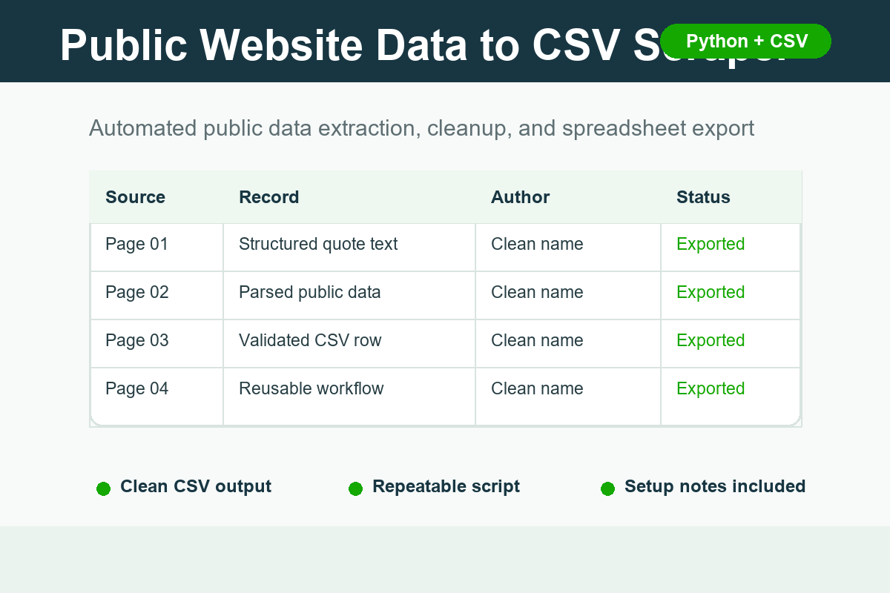

Public Data to CSV
Collect public records, listings, or page data into a clean spreadsheet.
$80-$250 starter scope
Small practical projects for clients who need repeatable scripts, clean spreadsheet outputs, public data extraction, or safe AI-assisted workflows.
This sample shows a lightweight Python workflow that extracts public webpage records, cleans the data, and exports structured rows into a CSV file.
It is designed for fixed-scope jobs where the final output should be easy to review in Excel or Google Sheets.

Collect public records, listings, or page data into a clean spreadsheet.
$80-$250 starter scope
Merge, clean, deduplicate, normalize, and summarize CSV or Excel files.
$50-$150 starter scope
Classify emails or documents, create review queues, and generate summaries.
$150-$300 starter scope
Standard-library Python script that fetches public pages, parses quote records, and writes a CSV output.
Workflow outline for classifying inbox messages into action buckets and producing safe reviewable summaries.
Send a sample input, the desired output format, and any deadline. A good first milestone is usually a small repeatable script or one clean spreadsheet output.
This portfolio is intended for Upwork proposals and small fixed-scope automation projects.